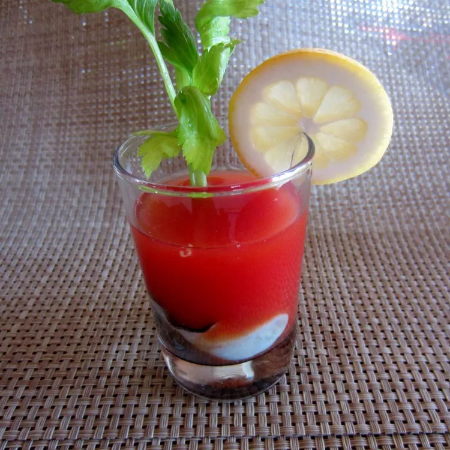

Home
Oyster Shooters

PHOTO: allrecipes.com
Description
An oyster shooter is a spicy cocktail. Drink/eat like you would a shot of vodka, probably.
Ingredients
- 9 fluid ounces tomato juice
- 1 teaspoon prepared horseradish
- 2 teaspoons freshly ground black pepper
- 12 (1.5 fluid ounce) jiggers vodka
- 12 shucked oysters
- 1 lemon - cut into wedges, for garnish
Preparation steps
- Mix tomato juice, horseradish, and pepper in a large bowl until well combined.
- Pour 1/2 shot of tomato juice mixture into 12 small glasses. Add a shot of vodka to each glass. Place 1 raw oyster in each glass and garnish with a lemon wedge.
Back to top